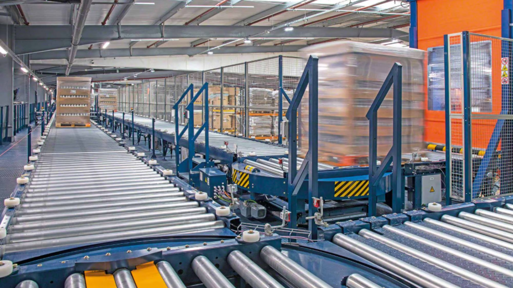

Ogni impianto di movimentazione nasce da un sopralluogo accurato. Entriamo in azienda per osservare da vicino il ciclo produttivo, analizzare gli spazi, valutare i materiali da trasportare e comprendere le reali necessità operative.
Il nostro obiettivo è progettare un sistema che:
Un’analisi accurata ci permette di scegliere il tipo di nastro più adatto (PVC, PU, gomma, modulare, alimentare, alta temperatura) e di progettare un trasportatore che garantisca affidabilità, durata e facilità di manutenzione.
Grazie all’esperienza maturata in diversi settori — alimentare, logistico, metalmeccanico, packaging, agricolo — siamo in grado di individuare rapidamente le soluzioni più efficaci per migliorare la produttività e ridurre i costi operativi.
